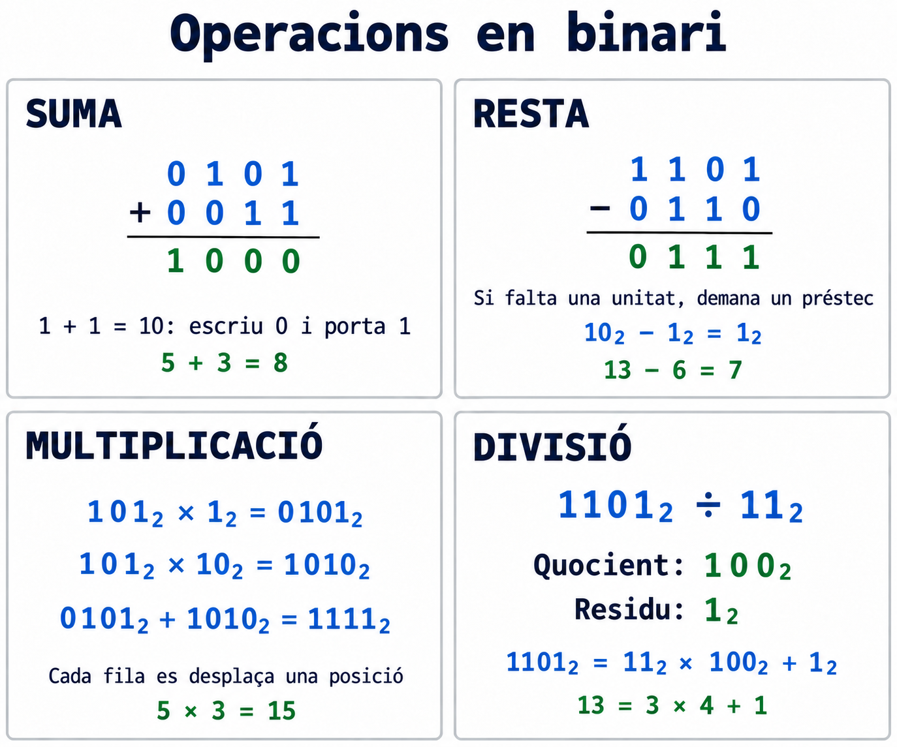
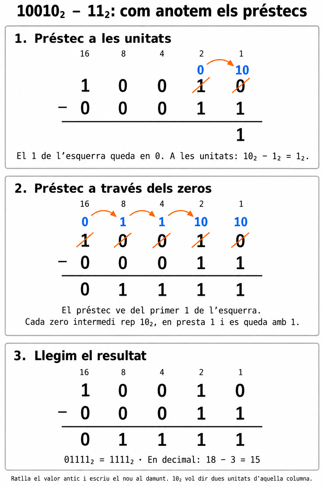
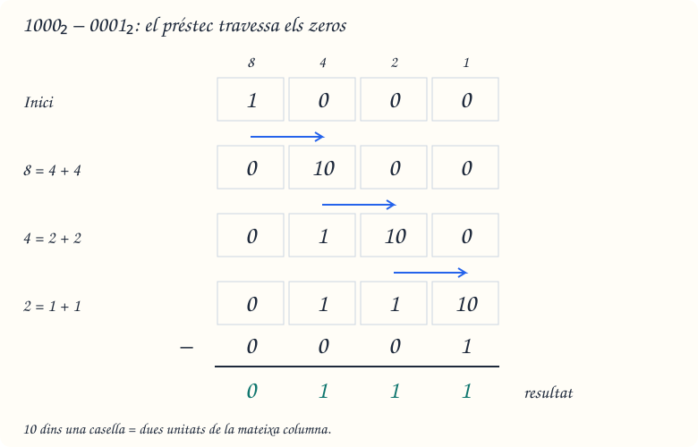
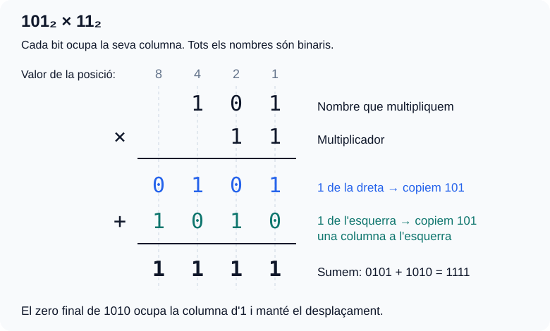
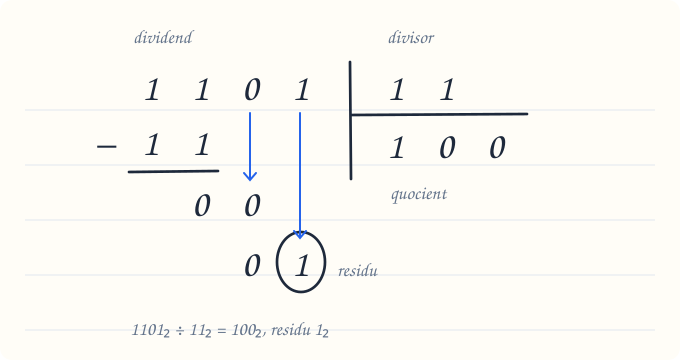
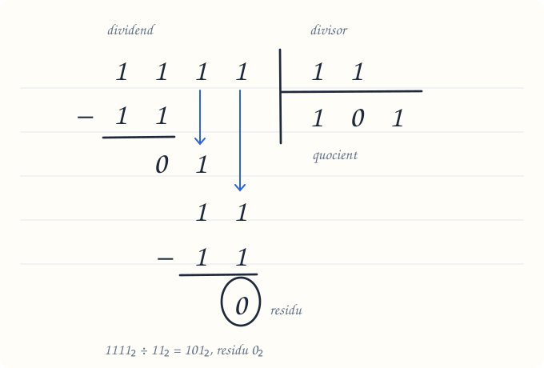

Bloc 3. Sumes, restes, multiplicacions i divisions en binari
Pregunta clau: com podem calcular utilitzant només zeros i uns?
Les operacions en binari segueixen una idea que ja coneixes del decimal: treballem per columnes i respectem el valor de cada posició. La diferència és que cada posició val el doble de la que té a la dreta.
En aquest bloc treballarem amb enters no negatius, restes amb resultat no negatiu i divisions enteres amb quocient i residu. Podem afegir tants bits com necessitem per escriure el resultat.
1. Abans de començar
Repassa el bloc de conversions si encara et costa llegir un nombre binari.
| Valor de la posició | 16 | 8 | 4 | 2 | 1 |
|---|---|---|---|---|---|
| Exemple: 10110₂ | 1 | 0 | 1 | 1 | 0 |
Aquest nombre val 16 + 4 + 2 = 22 en decimal.
Per operar:
- Alinea els nombres per la dreta. Així les unitats queden sota les unitats.
- Si et facilita el càlcul, completa amb zeros a l'esquerra:
101₂ = 0101₂. - En sumes i restes, comença per la columna de la dreta.
- Comprova el resultat convertint-lo a decimal.
Com llegirem els exemples?
Tots els nombres dels càlculs en columna estan escrits en binari. Les comprovacions indicaran explícitament que estan en decimal. Recorda que 10₂ es llegeix «u, zero en binari» i val dos, no deu.

2. Suma binària: què passa quan arribem a dos?
Les regles bàsiques
| Suma de bits | Resultat binari | Què escrivim a la columna? | Què portem a l'esquerra? |
|---|---|---|---|
| 0 + 0 | 0 | 0 | Res |
| 0 + 1 | 1 | 1 | Res |
| 1 + 0 | 1 | 1 | Res |
| 1 + 1 | 10 | 0 | 1 |
| 1 + 1 + 1 | 11 | 1 | 1 |
L'última fila apareix quan sumem dos bits que valen 1 i també arriba una portada de la columna anterior.
Per què portem un 1?
En decimal, deu unitats es converteixen en una desena. En binari, dues unitats d'una columna es converteixen en una unitat de la columna de l'esquerra. Per això 1 + 1 = 10₂: escrivim 0 i portem 1.
Exemple guiat: 0101₂ + 0011₂
Seguim les columnes de dreta a esquerra:
| Pas | Columna que val… | Càlcul, incloent-hi la portada | Bit que escrivim | Portada següent |
|---|---|---|---|---|
| 1 | 1 | 1 + 1 = 10₂ | 0 | 1 |
| 2 | 2 | 0 + 1 + 1 = 10₂ | 0 | 1 |
| 3 | 4 | 1 + 0 + 1 = 10₂ | 0 | 1 |
| 4 | 8 | 0 + 0 + 1 = 1₂ | 1 | 0 |
Els bits que hem anat escrivint ocupen les posicions de dreta a esquerra. El nombre complet és 1000₂.
Comprovació en decimal: 5 + 3 = 8.
I si encara queda una portada al final?
Les tres columnes produeixen un 0 i passen una portada a l'esquerra. L'última portada es converteix en un nou bit inicial.
Comprovació en decimal: 7 + 1 = 8.
No perdis l'última portada
111₂ + 1₂ necessita 4 bits. Si només guardéssim els tres bits finals, obtindríem 000 i perdríem part del resultat. En un espai fix de 3 bits sense signe, això és un desbordament.
3. Resta binària: demanar un préstec
| Resta | Resultat |
|---|---|
| 0 − 0 | 0 |
| 1 − 0 | 1 |
| 1 − 1 | 0 |
| 0 − 1 | Demanem un préstec a l'esquerra: 10₂ − 1₂ = 1₂. |
Per què el préstec aporta dues unitats?
Cada columna val el doble que la de la dreta. Quan una columna presta un 1 a la seva veïna de la dreta, aquesta rep dues unitats, escrites 10₂. Per exemple: 4 = 2 + 2. La columna que presta perd aquella unitat: el seu 1 passa a 0.
El 10₂ del préstec s'anota dins de la mateixa columna: representa dues unitats d'aquella posició.
Exemple visual: 10010₂ − 00011₂

Comprovació en decimal: 18 − 3 = 15.
Quan el préstec travessa diverses columnes: 1000₂ − 0001₂
Si la columna del costat té 0, busquem el primer 1 a l'esquerra. El préstec passa de columna en columna: cada columna intermèdia rep dues unitats, se'n queda una i en presta una a la dreta.

Resultat: 1000₂ − 0001₂ = 0111₂. En decimal: 8 − 1 = 7.
Actualitza la columna que ha prestat
Fes servir els valors nous anotats al damunt, perquè els originals ja han canviat.
4. Multiplicació binària
Taula de multiplicació
| × | 0 | 1 |
|---|---|---|
| 0 | 0 | 0 |
| 1 | 0 | 1 |
Multipliquem pels bits del multiplicador de dreta a esquerra: amb un 1, copiem el nombre; amb un 0, escrivim zeros. Cada fila es desplaça una posició més a l'esquerra. Al final, sumem les files.
Exemple visual: 101₂ × 11₂

Comprovació en decimal: 5 × 3 = 15.
5. Divisió binària
El dividend és el nombre que dividim i el divisor és el nombre pel qual dividim, que no pot ser zero. Obtenim un quocient i un residu.
- Comença per l'esquerra i agafa els primers bits on càpiga el divisor.
- Escriu 1 al quocient si hi cap i resta el divisor; si no hi cap, escriu 0.
- Baixa el bit següent a la dreta del residu parcial i repeteix fins al final. No et saltis els zeros del quocient.
Si el dividend és més petit que el divisor, el quocient és 0 i el residu és el dividend.
Exemple visual: 1101₂ ÷ 11₂

Per què baixem els bits i no restem? Després de fer 11₂ − 11₂, queda 0, però encara falten bits del dividend per utilitzar. Els baixem un a un, en ordre, per continuar la divisió. Baixar un bit equival a multiplicar el residu parcial per dos i afegir-hi aquell bit.
- Baixem el 0: tenim
00₂ = 0₂. És més petit que11₂: el divisor hi cap zero vegades, així que escrivim 0 al quocient i no restem. - Baixem l'1: tenim
01₂ = 1₂. També és més petit que11₂: escrivim un altre 0 al quocient i no restem.
Escriure el 0 al quocient és el resultat d'aquell pas. Si restéssim 11₂, obtindríem un valor negatiu. Com que ja no queden bits per baixar, l'1 final és el residu.
Resultat: quocient 100₂, residu 1₂.
Comprovació en decimal: 13 = 3 × 4 + 1.
Un altre dibuix: 1111₂ ÷ 11₂ (només baixem uns)

- Restem els primers
11₂ − 11₂: queda 0 i escrivim 1 al quocient. - Baixem el primer 1: tenim
01₂ = 1₂. No hi cap11₂, així que escrivim 0 al quocient. - Baixem el segon 1: ara tenim
11₂. El divisor hi cap una vegada: escrivim 1 al quocient i fem11₂ − 11₂ = 0₂.
Resultat: quocient 101₂, residu 0₂. És una divisió exacta.
Comprovació en decimal: 15 = 3 × 5 + 0.
Recorda: dividend = divisor × quocient + residu, amb el residu no negatiu i més petit que el divisor.
6. Errors que podem evitar
| Error | Com el corregim? |
|---|---|
| Escriure un 2 dins d'un resultat binari. | Escrivim 0 en aquella columna i portem 1 a l'esquerra. |
| Oblidar la portada que arriba en una suma. | Anotem la portada abans de calcular la columna següent. |
| Fer un préstec sense modificar la columna d'origen. | Descomptem la unitat que aquella columna ha prestat. |
| Sumar tots els productes parcials sense desplaçar-los. | Respectem la posició del bit del multiplicador. |
| Saltar-se un zero del quocient. | Després de cada bit baixat, escrivim 0 o 1 al quocient. |
| Donar un residu igual o superior al divisor. | Revisem la divisió: encara hi cap almenys una vegada més. |
7. Practica: primer calcula, després comprova
Totes les operacions següents estan en base 2. Escriu les portades, els préstecs o els passos intermedis al full.
A. Sumes
101 + 101011 + 01101111 + 0001
Solucions de les sumes
- 111₂. Sense portades. En decimal:
5 + 2 = 7. - 10001₂. De dreta a esquerra:
1 + 0 = 1;1 + 1 = 10₂;0 + 1 + 1 = 10₂;1 + 0 + 1 = 10₂. Escrivim l'última portada en una posició nova. En decimal:11 + 6 = 17. - 10000₂. La portada passa per totes les columnes i crea un bit nou. En decimal:
15 + 1 = 16.
B. Restes
1110 − 01001010 − 001110000 − 00001
Solucions de les restes
- 1010₂. No cal cap préstec. En decimal:
14 − 4 = 10. - 0111₂. La columna de les unitats demana a la de valor 2. Després, la de valor 2 necessita un altre préstec, que arriba des de la de valor 8 passant per la de valor 4. En decimal:
10 − 3 = 7. - 01111₂. El préstec travessa les columnes amb zero. En decimal:
16 − 1 = 15.
C. Multiplicacions
110 × 10111 × 11101 × 101
Solucions de les multiplicacions
- 1100₂. Multiplicar per 10₂ desplaça una posició a l'esquerra. En decimal:
6 × 2 = 12. - 10101₂. Productes parcials:
00111 + 01110 = 10101. En decimal:7 × 3 = 21. - 11001₂. Productes parcials:
00101 + 00000 + 10100 = 11001. En decimal:5 × 5 = 25.
D. Divisions enteres
Indica quocient i residu, encara que el residu sigui zero.
1100 ÷ 111110 ÷ 1110111 ÷ 101
Solucions de les divisions
- Quocient 100₂, residu 0₂. Agafem 11 i restem 11; després baixem cadascun dels dos zeros i escrivim un 0 per a cadascun. En decimal:
12 = 3 × 4 + 0. - Quocient 100₂, residu 10₂. Agafem 11 i restem 11; baixem 1 i escrivim 0; baixem 0, obtenim 10 i escrivim 0 perquè encara és menor que 11. En decimal:
14 = 3 × 4 + 2. - Quocient 100₂, residu 11₂. Agafem 101 i restem 101; baixem 1 i escrivim 0; baixem l'últim 1, obtenim 11 i escrivim 0 perquè és menor que 101. En decimal:
23 = 5 × 4 + 3.
8. Repte en parelles: troba i explica l'error
Un company ha escrit aquests resultats:
| Operació | Resposta del company |
|---|---|
| 11₂ + 1₂ | 20₂ |
| 1000₂ − 1₂ | 1001₂ |
| 101₂ × 10₂ | 101₂ |
| 1101₂ ÷ 11₂ | Quocient 1₂ i residu 1₂ |
Per a cada fila:
- Identifiqueu l'error amb una frase.
- Feu l'operació correcta en binari.
- Comproveu-la en decimal.
Correcció del repte
- Suma: el dígit 2 no existeix en binari.
11₂ + 1₂ = 100₂; en decimal,3 + 1 = 4. - Resta: cal demanar i propagar el préstec.
1000₂ − 1₂ = 111₂; en decimal,8 − 1 = 7. - Multiplicació: falta desplaçar una posició.
101₂ × 10₂ = 1010₂; en decimal,5 × 2 = 10. - Divisió: falten els dos zeros del quocient. Quocient
100₂i residu1₂; en decimal,13 = 3 × 4 + 1.
9. Què has de saber explicar sense mirar els apunts?
- Per què
1 + 1s'escriu10₂i què és el llevat. - Per què un préstec aporta dues unitats a la columna immediata de la dreta.
- Per què desplacem els productes parcials en una multiplicació.
- Quan escrivim 0 o 1 al quocient d'una divisió.
- Com comprovem una divisió amb divisor × quocient + residu.